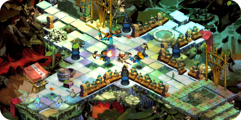
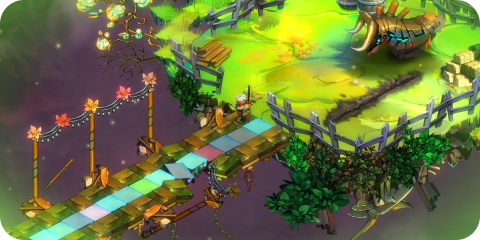
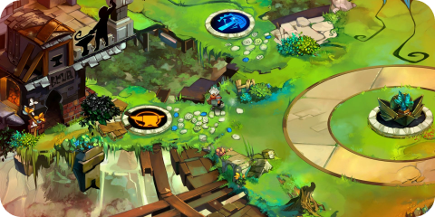

Bastion é um jogo de ação e RPG desenvolvido pela Supergiant Games, lançado em 2011. O jogo se passa em um mundo pós-apocalíptico, onde os jogadores controlam um personagem chamado "The Kid", que explora um ambiente flutuante chamado Bastion, enquanto enfrenta inimigos e desvenda os mistérios por trás da grande Calamidade que destruiu o mundo.
O destaque de Bastion é uma narrativa dinâmica, apresentada por um narrador onipresente que comenta as ações do jogador em tempo real. Essa abordagem única cria uma atmosfera envolvente, adaptando a história às escolhas e ações do jogador, proporcionando uma experiência personalizada.
A jogabilidade de Bastion combina elementos de combate em tempo real com mecânicas de RPG, permitindo que os jogadores aprimorem habilidades, coletem armas e enfrentem diversos inimigos. A trilha sonora, composta por Darren Korb, contribui significativamente para a atmosfera do jogo, incorporando uma mistura envolvente de estilos musicais que complementa a ambientação única de Bastion.
Os visuais vibrantes e o design de arte característico, combinados com a narrativa inovadora e a jogabilidade envolvente, renderam a Bastion aclamação crítica e o status de um jogo indie notável, destacando-se por sua originalidade e impacto na indústria de jogos.
Informações adicionais:
Data de lançamento: 20 de julho, 2011
Desenvolvedor: Supergiant Games
Estúdio: Supergiant Games
Marcadores do jogo: Plataformas e precisão, 3D